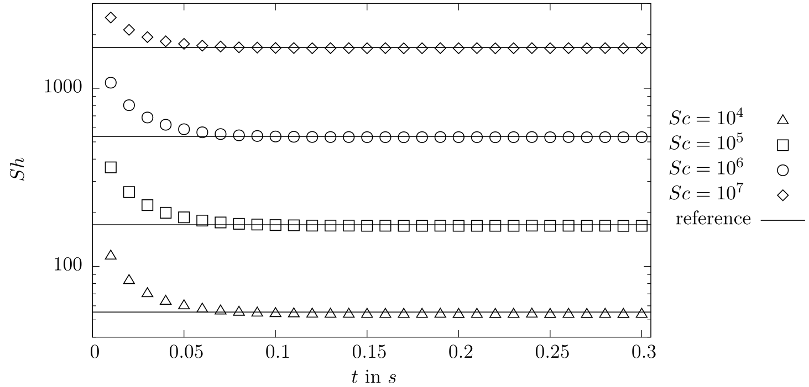
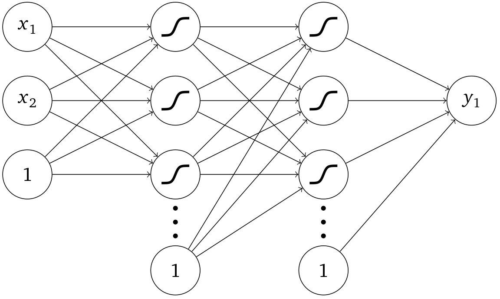

Modeling and simulation of convection-dominated species transfer at rising bubbles
Andre Weiner, weiner@mma.tu-darmstadt.de
First supervisor: Prof. Dr. rer. nat. Dieter Bothe
Second supervisor: Prof. Dr.-Ing. Peter Stephan
Slides available at: andreweiner.github.io/reveal.js/phd_defence.html
Gas-liquid reactors

micro reactor
size: $mm$-range
source: SPP 1740
prediction of
- mass transfer
- enhancement
- mixing
- conversion
- selectivity
- yield
- ...

bubble column reactor
size: $m$-range
source: R. M. Raimundo, ENI
Scale-up strategy

What about the «arrows»?
Video by courtesy of David Merker.
High Péclet number problem

Image source: U. D. Kück et al.: Analyse des Grenzschichtnahen Stofftransports an frei aufsteigenden Gasblasen. CIT (2009), 1599-1606
Specimen calculation
$d_b=1~mm$ water/oxygen at room temperature
- $$ Re\approx 250;\quad \delta_h/d_b \propto Re^{-1/2};\quad\delta_h\approx 45~\mu m $$
- $$ Sc\approx 500;\quad \delta_c/\delta_h \propto Sc^{-1/2};\quad\delta_c\approx 2.5~\mu m $$
- $Pe = Sc\ Re = \nu_l / D_{O_2} \cdot U_b d_b/\nu_l \approx 10^5 $
$\delta_c/\delta_h$ typically 10 ... 100
Computational limit

Two-phase DNS limit (3D): $Pe\approx 1000$.
Outline
- Effect of underresolved meshes
- Subgrid-scale modeling
- Data-driven modeling
- Subgrid-scale model assessment
- Comparison with experiments
- Summary and outlook
Underresolved meshes
- $A$ - transfer species
- $B$ - bulk species
- $P$ - product species
- $c_A|_\Sigma = const.$
- $\partial_n c_{B}|_\Sigma = 0$, $\partial_n c_{P}|_\Sigma = 0$
- $\dot{r}_j = \pm kc_A^2c_B$
- $\mathbf{u}$ - given velocity vector field
- finite volume discretization
 $\Omega^\pm$ - liquid/gas domain, $\Sigma$ - interface, $f_i$ - cell faces
$\Omega^\pm$ - liquid/gas domain, $\Sigma$ - interface, $f_i$ - cell faces

Normalized concentration fields around a rising bubble with and without chemical reaction in the liquid ($A+B\rightarrow P$).
Transfer species - A
 Normalized concentration profile $\tilde{c}_A$ in interface normal direction $x/\delta_c$ for the transfer species (solid blue line),
average concentration values per cell (shaded blue), and linear reconstruction (orange).
Normalized concentration profile $\tilde{c}_A$ in interface normal direction $x/\delta_c$ for the transfer species (solid blue line),
average concentration values per cell (shaded blue), and linear reconstruction (orange).
Interpolation errors
Bulk species - B
 Normalized concentration profile $\tilde{c}_B$ in interface normal direction $x/\delta_c$ for the bulk species (dashed blue line),
average concentration values per cell (shaded blue), and linear reconstruction (orange).
Normalized concentration profile $\tilde{c}_B$ in interface normal direction $x/\delta_c$ for the bulk species (dashed blue line),
average concentration values per cell (shaded blue), and linear reconstruction (orange).
Product species - P
 Normalized concentration profile $\tilde{c}_P$ in interface normal direction $x/\delta_c$ for the product species (dash-dotted blue line),
average concentration values per cell (shaded blue), and linear reconstruction (orange).
Normalized concentration profile $\tilde{c}_P$ in interface normal direction $x/\delta_c$ for the product species (dash-dotted blue line),
average concentration values per cell (shaded blue), and linear reconstruction (orange).
Source term
Reaction source profile $\dot{\tilde{r}}$ in interface normal direction $x/\delta_c$ (dash-dotted blue line), cell average of $\dot{\tilde{r}}$ (shaded blue), and product of averages (orange). The Damköhler number is defined as $Da=kd_b/U_b$.Subgrid-scale modeling
Idea: Leverage coherent structures in convection-dominated species boundary layers.
-
Substitute problem
Find a representative substitute problem to obtain a parameterized profile function. -
Reconstruction
Adjust the profile function based on local simulation data (cell-width, average concentration, ...) -
Correction
Correct convective fluxes, diffusive fluxes, and reaction source terms based on the adjusted profile function.
(1) Substitute problem
- $\tilde{c}(\tilde{x}=0,\tilde{y}) = 1$
- $\tilde{c}(\tilde{x}>0,\tilde{y}=0) = 0$
- $\tilde{c}(\tilde{x}\rightarrow\infty,\tilde{y}) = 0$
- 2004 - first idea, physisorption
- 2010 - first implementation by Alke, Bothe, Kröger, Weigand, Weirich and Weking
- 2013 - improved implementation by Bothe and Fleckenstein
- 2016 - extension to first order reaction by Gründing, Fleckenstein and Bothe
Solutions

(2.1) Reconstruction
(3.1) Correction
-
compute interface normal derivative:
$\partial_\tilde{x} \tilde{c}|_{\tilde{x}=0} = 2/(\sqrt{\pi}\delta_{num})$ - correct numerical diffusive flux at $\tilde{x}=0$
- solve transport equation for $\tilde{c}$
→ saves one refinement level (half cell-width)
A Volume-of-Fluid-based method for mass transfer processes at fluid particles (2013)
(3.2) Correction
Correct convective and diffusive fluxes over all cell faces of an interface cell.
(2.2) Reconstruction
Results
Stokes flow validation (semi-analytical reference) with
$Sc=10^4,10^5,10^6,10^7$
Results
$Sh = \frac{k_L d_b}{D}$ with $k_L = \frac{\dot{N}}{A_{eff}\Delta c}$
Complex reactions?
Data-driven modeling
Idea: Replace analytical solution with machine learning (ML) model.
-
Substitute problem
Find a representative substitute problem and solve it numerically to obtain boundary layer data. -
Model creation
Select meaningful features (variables) and train a ML model -
Correction
Correct convective fluxes, diffusive fluxes, and reaction source terms based on the ML model.
(1) Substitute problem
numerical solution
- OpenFOAM®
- steady-state flow dynamics
- parameters: $Re$, $Sc$, $Da$, shape, ...
- finished in minutes
data extraction
- features (input variables) should be available in target simulation
- features motivated by boundary layer theory and previous modeling
- down-sampling to coarse meshes
- stored as comma separated values (csv)
(2.1) Feature selection
Idea: ranking of feature importance.

(2.2) Model creation
Multilayer Perceptron
- 6 layers with 40 neurons per layer
- SELU activation function
model training
- mean squared error loss
- one model per label
- ≈ 5 min training time per model
- training on CPU with double precision
implementation
- PyTorch®
- export to TorchScript
- dynamically loaded at runtime
ML model assessment
Histogram of the label errors for the transfer species (A) in case of physisorption.
ML model assessment
Heatmap of the maximum label errors for the transfer species (A) in case of physisorption.
Challenges
Feature density for the source terms of a parallel-consecutive reaction of type $A+B\rightarrow P$ and $A+P\rightarrow S$.
Validation, Results?
SGS Model assessment
Aim:
create reference data for complex shapes and flow scenarios to assess model generalization
Idea:
decoupling of two-phase flow and species transport
1. Two phase flow simulation
Volume-of-Fluid (VoF)-based solver implemented in Basilisk.
Extraction of shapes and velocity fields.
Air bubbles of size $d_b = 1.0/1.4/1.8~mm$ rising in water at room temperature.Extraction of shapes and velocity fields.
Air bubbles rising in aqueous sugar solutions. Characteristic shapes: dimpled-ellipsoidal, spherical cap, and skirted.2.1 Parameterization and approximation - shape
$$\tilde{r} = \tilde{r}(\varphi)\quad\text{for}\quad 0\le\varphi\le\pi$$ Raduis of an ellipsoidal air bubble rising in water.2.2 Parameterization and approximation - velocity
$$\tilde{u}_\tau |_\Sigma = \tilde{u}_\tau |_\Sigma(\varphi)\quad\text{for}\quad 0\le\varphi\le\pi\quad \text{with}\quad \tilde{u}_\tau = \tilde{\mathbf{u}}\cdot\tau$$ Tangential velocity component at the interface of an ellipsoidal air bubble rising in water.3. Unstructured meshing
Single phase mesh of an dimpled ellipsoidal bubble created with snappyHexMesh.4. Single phase flow solution
Magnitude of velocity vector field around a dimpled ellipsoidal bubble. Velocity boundary condition at the interface: prescribed velocity (left) and free-slip condition (right).4. Single phase flow solution
Streamlines around a dimpled ellipsoidal bubble: two-phase simulation (left), prescribed velocity (center), free-slip condition (right).5. Species transport solution
Concentration fields around a dimpled ellipsoidal bubble for a parallel-consecutive reaction of type $A+B\rightarrow P$ and $A+P\rightarrow S$.High-fidelity reference data
Global Sherwood number $Sh$ and enhancement factor $E$ for a dimpled ellipsoidal bubble and various reaction types.Model assessment
Prismatic cell layers around a spherical-cap bubble with increasing mesh resolution.
Model assessment
decay: $A\rightarrow P$; single: $A + B \rightarrow P$; consecutive: $A+B\rightarrow P$ & $A + P \rightarrow S$
Comparison with experiments
Interface Tracking
Experimental and numerical investigation of reactive species transport around a small rising bubble (2019)
Interface Tracking
-
direct implementation of momentum jump condition on $ \Sigma (t) $
$ [\![ p\mathbf{I} - \eta \left( \nabla \mathbf{u} + \nabla \mathbf{u}^\mathsf{T} \right)]\!] \cdot \mathbf{n}_\Sigma = \sigma\kappa\mathbf{n}_\Sigma + \nabla_\Sigma \sigma$ - sorption library $ s^\Sigma + [\![ -D\nabla c ]\!]\cdot \mathbf{n}_\Sigma = 0$
- surface tension isotherms $\sigma = \sigma (c^\Sigma)$
Computational analysis of single rising bubbles influenced by soluble surfactant (2018)
Velocity
Termial velocity plotted against the bubble diameter. Experimenal, numerical, theoretical and literature results.Local velocity
Streamlines and magnitude of interfacial velocity for clean (left) and contaminated (right) interfaces. The glyphs depict local Marangoni forces.Oxygen transport
 Local Sherwood number for clean (left) and contaminated (right) interfaces.
Local Sherwood number for clean (left) and contaminated (right) interfaces.
Experimental and numerical investigation of reactive species transport around a small rising bubble (2019)
Summary I
- high-$Pe$ number problem (boundary layer) ✔
- SGS modeling for complex reactions ✔
- hybrid approach for high-fidelity reference data ✔
- validation with complex bubble shapes ✔
- qualitative and quantitaive agreement with experiments ✔
- new understanding of dynamic surfactant adsorption ✔
Summary II
Well documented, fully reproducible, public research results and methods:
- https://github.com/AndreWeiner/phd_notebooks
- https://github.com/AndreWeiner/phd_basilisk
- https://github.com/AndreWeiner/phd_openfoam
Solution based on Git/Github, Docker/Dockerhub and TUDatalib.
Summary III
Pathway paved for data-driven solutions in computational fluid dynamics.
- production ready software stack and workflow
- radical gain in accuracy and performance
- training and repository for ML + CFD
Outlook
- (data-driven) modeling for the liquid bulk
- assessment for dynamic interfaces
- application to realted boundary layer problems
THE END
Special thanks to David Merker, Jens Timmermann, Chiara Pesci and Dennis Hillenbrand
Thank you for your attention!
Get in touch: weiner@mma.tu-darmstadt.de
Complementary material
Publications
Reproducibility
Pendant bubble method

Image by courtesy of David Merker. Measurement apparatus by dataphysics-instruments.